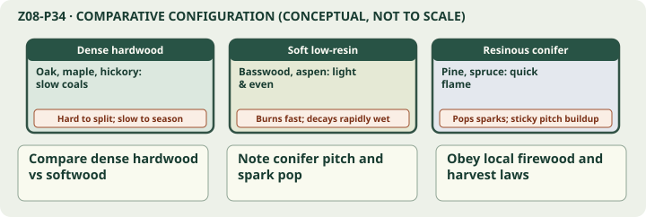

Z08-P34 · Rocks, minerals and materials · New manuscript
Hardwoods vs Softwoods: Resin, Splitting and Combustion Traits
Contrast dense ring-porous hardwoods with resinous conifers to match lawful fuel or craft expectations accurately.
When it applies · Upper Midwest mixed boreal-hardwood forests (oak, maple, birch, pine, spruce, cedar).
Equipment · Tree guide, dead downed material only.

Actions
- Distinguish dense hardwoods (oak, hickory, hard maple) from softer low-resin hardwoods (basswood, aspen) and resinous conifers (pine, spruce, balsam fir).[R15, B16]
- Expect resinous softwoods to ignite faster but throw popping embers and build sticky creosote/soot faster than seasoned dry hardwoods.[R15, C02]
- Check local firewood transport and state-park gathering rules to prevent spreading invasive forest pests such as emerald ash borer.[R09, R15]
Failure recognition · Assuming all dead wood burns or works identically leads to resin-glazed friction boards, showered sparks on tarps, or illegal firewood movement.[R09, R15, C02]
Verify · Wood category, resin behavior, spark clearance, and local gathering rules are confirmed before lawful use.[R09, R15]
Stop or change course · Stop gathering firewood inside prohibited preserves or transporting uncertified wood across invasive-pest quarantine lines.[R09, R15]
Evidence and editorial notes
- B16 · Minnesota DNR · Native Trees of Minnesota Identification Reference (Current web edition)
- Section: Native Minnesota trees: bark, buds, leaves, cones, and nuts · Conditions: Identifying oaks, pines, birches, maples, basswood, walnut, and spruce across seasons
Support: Reliable tree identification integrates leaf/needle arrangement, bud scales, bark pattern, fruit/cone structure, and habitat across seasons.
Limitations: Tree nuts and bark materials can require specific processing (e.g., tannin leaching) and remain on consumption HOLD until reviewed. · Conflicting evidence: None noted.
Editorial note: Anchors Z05 regional tree-food & bark profiles. · Specialist reviewer: Forestry botanist
Primary source · checked 2026-11-25 - C02 · USDA Forest Service / Smokey Bear · Smokey Bear’s Campfire Safety Guide (agency PDF)
- Section: Build your campfire; choose a location · Conditions: Where campfires are currently permitted
Support: Use an established fire ring where required or available. Protect the area from nearby combustible materials, avoid windy conditions and keep water ready.
Limitations: Site clearances vary by fuel load, slope, and wind; no universal safe radius fits all terrain. · Conflicting evidence: None; aligns with USFS-FIRE.
Editorial note: Grounds site-selection and ring-preparation procedures. · Specialist reviewer: Fire prevention and land management
Primary source · checked 2026-11-24 - R09 · Minnesota DNR · Minnesota State Park Rules and Resource Collecting Restrictions (Current web edition)
- Section: State park natural-feature protection · Conditions: Minnesota State Parks and Recreation Areas
Support: Removing rocks, minerals, soil, or live vegetation from Minnesota State Parks is prohibited to protect natural resources.
Limitations: Verify jurisdiction boundaries before picking up specimens even along shorelines or trails. · Conflicting evidence: None noted.
Editorial note: Bounds state-park material collection. · Specialist reviewer: Minnesota DNR resource manager
Primary source · checked 2026-11-25 - R15 · Minnesota DNR · Native Trees of Minnesota Identification Reference (Current web edition)
- Section: Regional wood species, grain, bark, and moisture variability · Conditions: Dead downed wood and natural bast fibers in Upper Midwest forests
Support: Wood density, grain straightness, resin content, and decay state vary widely by species, tree part, and moisture history.
Limitations: Visual grain inspection cannot certify structural load capacity; avoid cutting live trees where prohibited and reject punky or cracked wood. · Conflicting evidence: None noted.
Editorial note: Reconciles B007 wood notes with material limits. · Specialist reviewer: Forestry and wood-science specialist
Primary source · checked 2026-11-25
Source lineage · New manuscript (Z08 P16 wood materials) · Classification · New manuscript.